共 10 对：添加 4、
删除 3、替换 3。
两图整图真值均为 AI-generated；原图局部 Not tampered，编辑版局部 Tampered。
mask 为编码前实际变化像素。
p01_vqdm_box_label_add
VQDM · 添加 ·
在纸箱正面添加白色 FRAGILE 物流标签
源：VQDM/VQDM_1000_200_08_844_vqdm_00143 · mask 像素 8184 ·
bbox [64, 92, 196, 154]
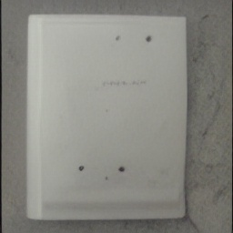
原图 · 整图 AI-generated / 局部 Not tampered
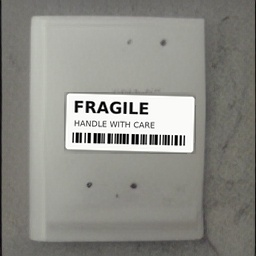
编辑版 · 整图 AI-generated / 局部 Tampered
 mask · 白色为编辑区域
mask · 白色为编辑区域
p02_wukong_tag_add
Wukong · 添加 ·
在衣架右侧挂上 SIZE M 价格吊牌
源：Wukong/841_wukong_image61 · mask 像素 3109 ·
bbox [382, 52, 428, 124]
 原图 · 整图 AI-generated / 局部 Not tampered
原图 · 整图 AI-generated / 局部 Not tampered
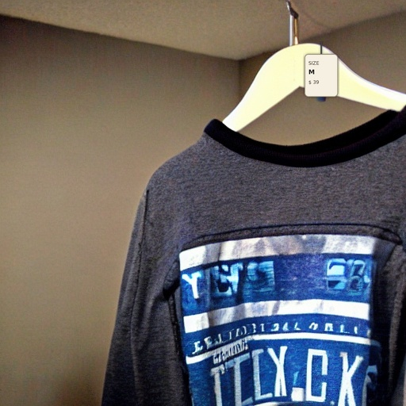
编辑版 · 整图 AI-generated / 局部 Tampered
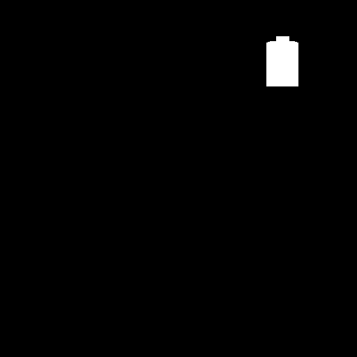
mask · 白色为编辑区域
p03_sd14_sphere_add
SD14 · 添加 ·
把左下空白木纹处补入一颗同图白色球体（含阴影）
源：SD14/722_sdv4_00039 · mask 像素 14917 ·
bbox [3, 393, 146, 512]
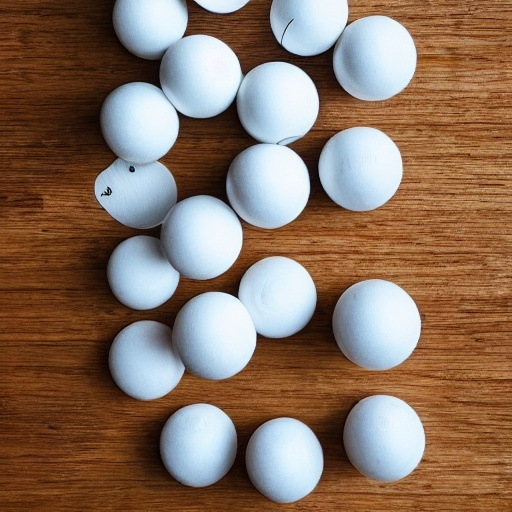
原图 · 整图 AI-generated / 局部 Not tampered
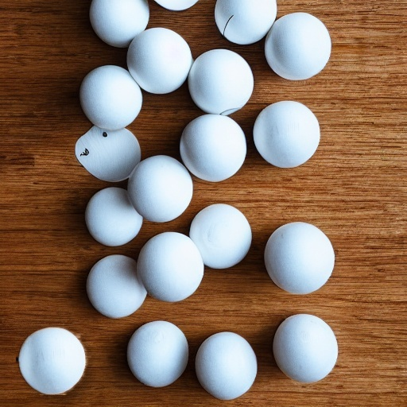
编辑版 · 整图 AI-generated / 局部 Tampered
 mask · 白色为编辑区域
mask · 白色为编辑区域
p04_glide_556_text_add
Glide · 添加 ·
在网页右侧空白处复制一段正文文本块
源：Glide/GLIDE_1000_200_05_556_glide_00127 · mask 像素 4146 ·
bbox [178, 85, 238, 160]
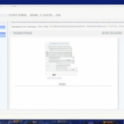
原图 · 整图 AI-generated / 局部 Not tampered
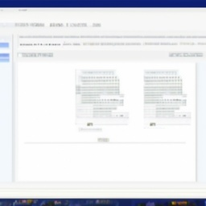
编辑版 · 整图 AI-generated / 局部 Tampered
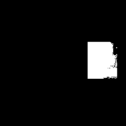
mask · 白色为编辑区域
p05_biggan_stick_delete
BigGAN · 删除 ·
删除画面中央的细木棍
源：BigGAN/623_biggan_00127 · mask 像素 7450 ·
bbox [0, 35, 128, 101]
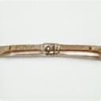
原图 · 整图 AI-generated / 局部 Not tampered
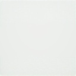
编辑版 · 整图 AI-generated / 局部 Tampered
 mask · 白色为编辑区域
mask · 白色为编辑区域
p06_glide_922_paragraph_delete
Glide · 删除 ·
删除右栏一段正文
源：Glide/GLIDE_1000_200_09_922_glide_00035 · mask 像素 1816 ·
bbox [160, 105, 216, 160]
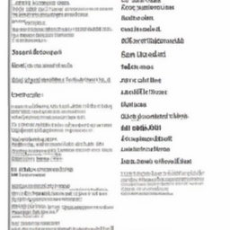
原图 · 整图 AI-generated / 局部 Not tampered
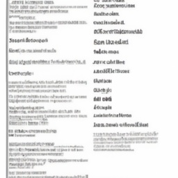
编辑版 · 整图 AI-generated / 局部 Tampered
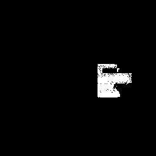
mask · 白色为编辑区域
p07_glide_830_caption_delete
Glide · 删除 ·
删除页面中部的说明文字块
源：Glide/GLIDE_1000_200_08_830_glide_00035 · mask 像素 7593 ·
bbox [76, 78, 229, 174]
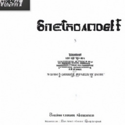
原图 · 整图 AI-generated / 局部 Not tampered
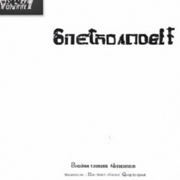
编辑版 · 整图 AI-generated / 局部 Tampered
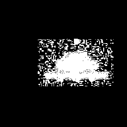
mask · 白色为编辑区域
p08_adm_notice_replace
ADM · 替换 ·
用白色通知单覆盖右下橙色警示标签
源：ADM/916_adm_85 · mask 像素 9999 ·
bbox [153, 125, 253, 225]
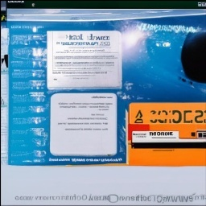
原图 · 整图 AI-generated / 局部 Not tampered
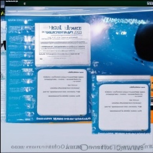
编辑版 · 整图 AI-generated / 局部 Tampered
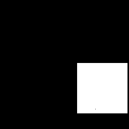
mask · 白色为编辑区域
p09_glide_screens_replace
Glide · 替换 ·
把左侧手机屏幕替换为中间屏幕的画面
源：Glide/GLIDE_1000_200_04_466_glide_00039 · mask 像素 9055 ·
bbox [0, 55, 65, 195]
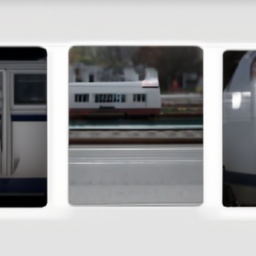
原图 · 整图 AI-generated / 局部 Not tampered
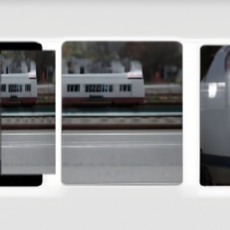
编辑版 · 整图 AI-generated / 局部 Tampered
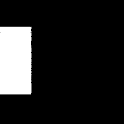
mask · 白色为编辑区域
p10_vqdm_document_replace
VQDM · 替换 ·
用左侧文本块替换右侧文本块
源：VQDM/VQDM_1000_200_09_916_vqdm_00035 · mask 像素 3509 ·
bbox [165, 105, 245, 150]
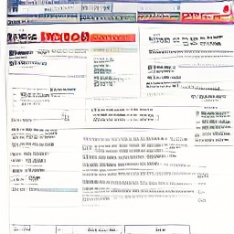
原图 · 整图 AI-generated / 局部 Not tampered
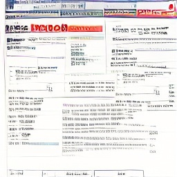
编辑版 · 整图 AI-generated / 局部 Tampered
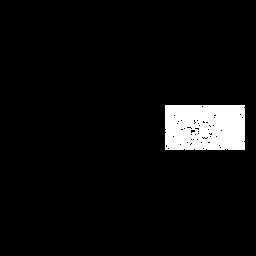
mask · 白色为编辑区域